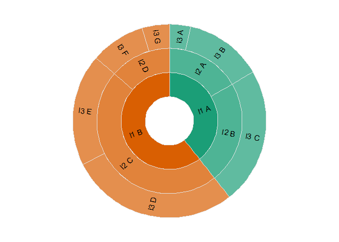

The goal of ggsunburst is to create a sunburst plot without much effort while allowing to create more complex plots with a bit of work.
Installation
You can install the development version of ggsunburst from GitHub with:
# install.packages("devtools")
devtools::install_github("sachijay/ggsunburst")Example
This is a basic example which shows you how to solve a common problem:
library(ggsunburst)
in_dat <- tibble::tibble(
level1_var = c(
rep("l1 A", times = 3),
rep("l1 B", times = 4)
),
level2_var = c(
"l2 A", "l2 A", "l2 B",
"l2 C", "l2 C", "l2 D", "l2 D"
),
level3_var = c(
"l3 A", "l3 B", "l3 C",
"l3 D", "l3 E", "l3 F", "l3 G"
),
values_var = c(
123, 456, 798,
987, 654, 321, 159
)
)
in_dat
#> # A tibble: 7 × 4
#> level1_var level2_var level3_var values_var
#> <chr> <chr> <chr> <dbl>
#> 1 l1 A l2 A l3 A 123
#> 2 l1 A l2 A l3 B 456
#> 3 l1 A l2 B l3 C 798
#> 4 l1 B l2 C l3 D 987
#> 5 l1 B l2 C l3 E 654
#> 6 l1 B l2 D l3 F 321
#> 7 l1 B l2 D l3 G 159
plot_dat <- get_sunplot_dataset(
.dat = in_dat,
level1_var, level2_var, level3_var,
.count_var = values_var
)
plot_dat
#> # A tibble: 14 × 7
#> .name .level .fill .box_min .box_max .alpha .angle
#> <chr> <int> <chr> <dbl> <dbl> <dbl> <dbl>
#> 1 <NA> 0 <NA> 0 1 0 -90
#> 2 l1 A 1 l1 A 0 0.394 1 19.1
#> 3 l1 B 1 l1 B 0.394 1 1 19.1
#> 4 l2 A 2 l1 A 0 0.166 0.75 60.2
#> 5 l2 B 2 l1 A 0.166 0.394 0.75 -10.7
#> 6 l2 C 2 l1 B 0.394 0.863 0.75 43.8
#> 7 l2 D 2 l1 B 0.863 1 0.75 -65.3
#> 8 l3 A 3 l1 A 0 0.0352 0.667 83.7
#> 9 l3 B 3 l1 A 0.0352 0.166 0.667 53.9
#> 10 l3 C 3 l1 A 0.166 0.394 0.667 -10.7
#> 11 l3 D 3 l1 B 0.394 0.676 0.667 77.5
#> 12 l3 E 3 l1 B 0.676 0.863 0.667 -6.95
#> 13 l3 F 3 l1 B 0.863 0.955 0.667 -57.1
#> 14 l3 G 3 l1 B 0.955 1 0.667 -81.8
draw_sunburst_plot(
.dat = plot_dat,
.label_txt_size = 4,
.linewidth = 0.5,
palette = "Dark2"
)
#> Warning: Removed 1 rows containing missing values (`geom_text()`).